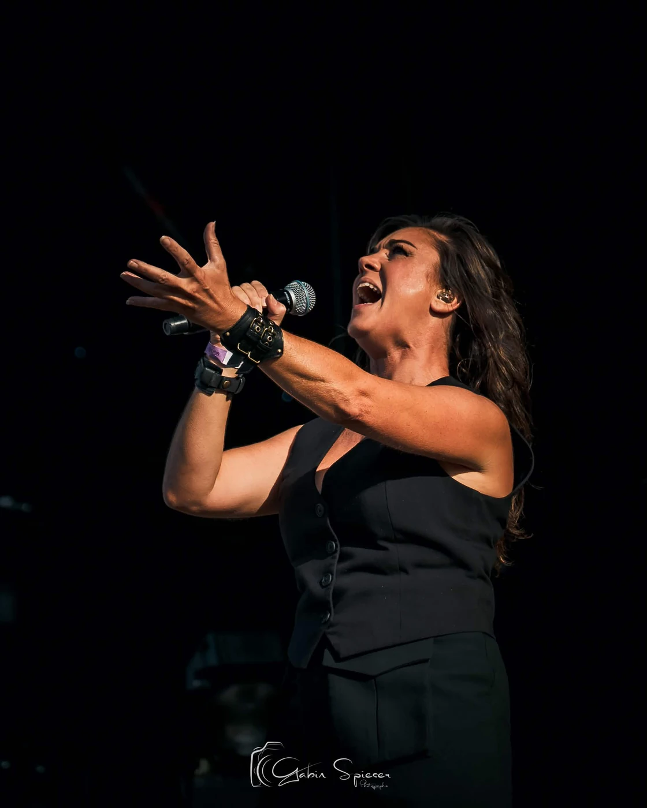
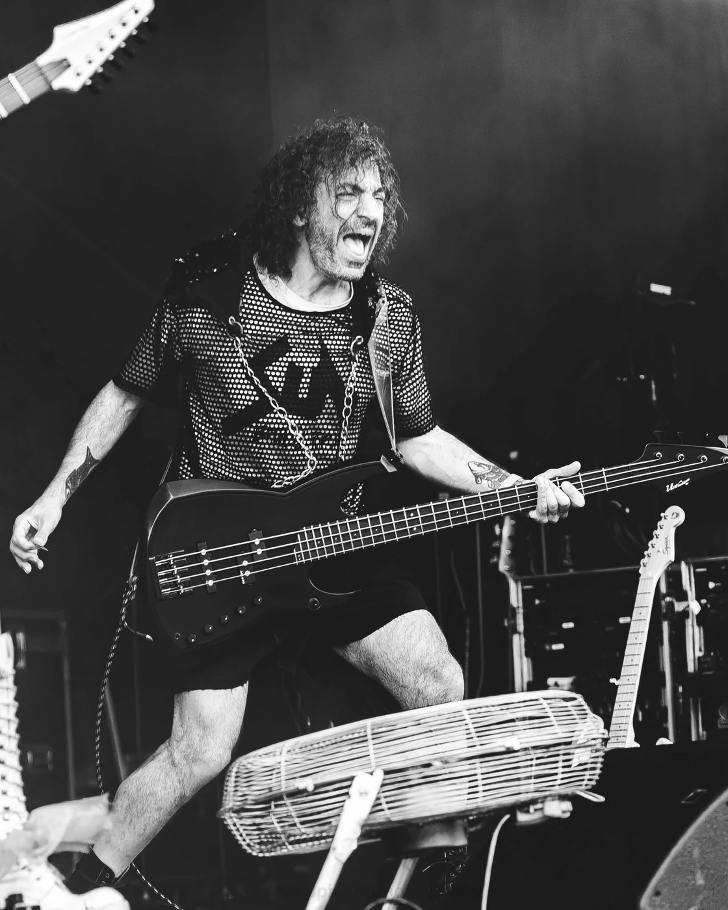
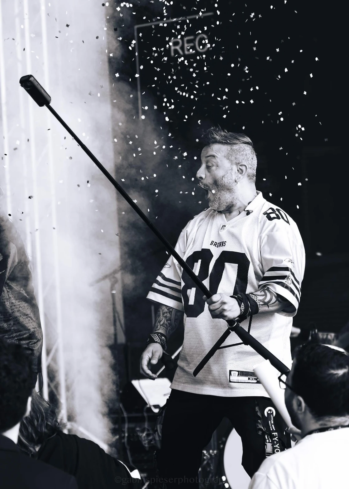
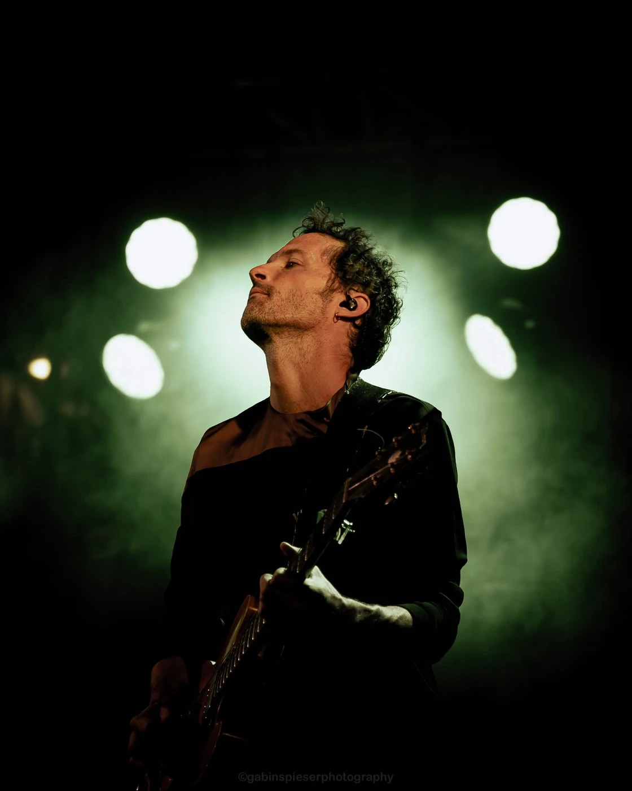
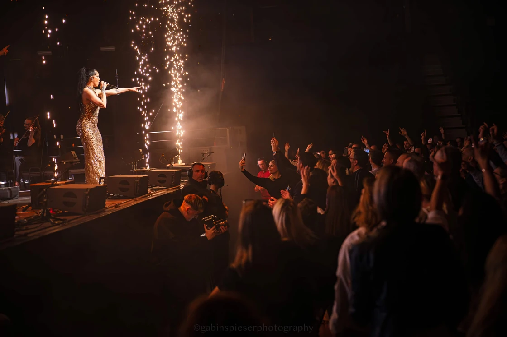
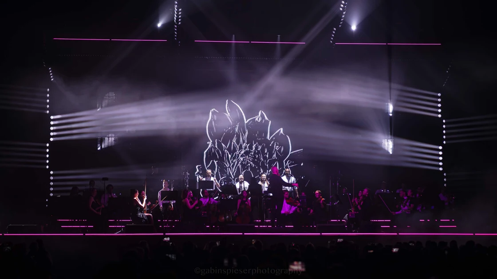
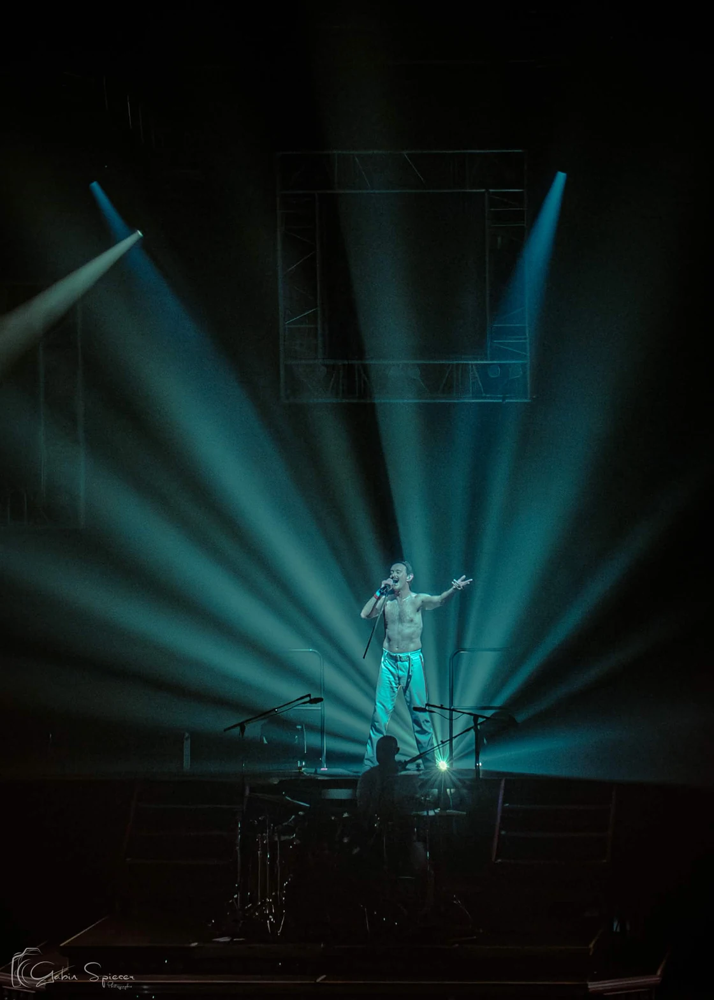
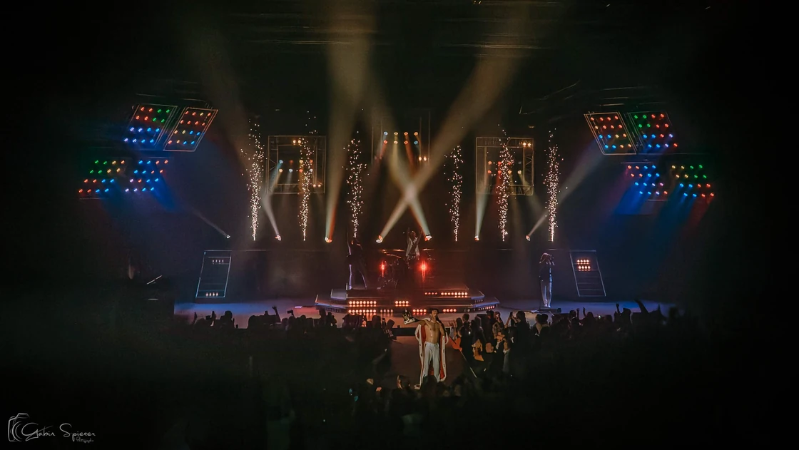

Sur ordinateur, survolez la photo ou placez le focus dessus pour lire sa légende. Sur écran tactile, touchez la photo pour la révéler, puis utilisez Agrandir. Les liens des artistes s’ouvrent dans un nouvel onglet.
Portfolio · 32 photographies
Ça se voit.
Ça se ressent.
Je veux raconter votre sueur.
Votre beauté. Votre rage. Votre scène.
Le reste, je vous laisse le regarder.
01 / 14 photographies
Tout donner.
Les corps qui lâchent. Les cheveux qui volent. Ces moments où la scène prend toute la place.


SUN · Brutal Pop
17

Virginie Rohart
03

Bassiste de SUN
18
Cut Capers
09
Stomy Bugsy
01
Ëda Diaz
11
Saxophoniste · Electro Symphony
Reims Arena · 12 avril 2026
12
Chanteur · Electro Symphony
Reims Arena · 12 avril 2026
19
Guitariste de RORI
Moissons Rock · mai 2026
16

Pixel Syndrome
26
Julien Doré
04
Feu! Chatterton
0602 / 10 photographies
Être vrai.
Un regard. Un geste. Une seconde où vous oubliez l’objectif. C’est là que je veux être.

Choriste d’Anna Winkin
Wavre · Place aux Artistes · 21 août 2026
07

Eben
Musiques d’ici et d’Ailleurs · Châlons-en-Champagne · 11 juillet 2026
14
Ina Forsman
10
RIDSA
28
dela
Japan Mania · Reims · mai 2026
15
Luiza
27
Noa Sax
V and B Saint-Memmie · juillet–août 2026
08
Electro Symphony
13
Electro Symphony
25
One Night of Queen
3203 / 08 photographies
Faire vibrer
la salle.
La lumière, la foule, cette énergie qui circule entre la scène et le public. Je veux qu’on la ressente encore.


Electro Symphony
24
Electro Symphony
21
Electro Symphony
23

Electro Symphony
20
Electro Symphony
22

One Night of Queen
30
One Night of Queen
29

One Night of Queen
31Et maintenant ?
La prochaine scène,
c’est la vôtre ?
Un concert, un portrait, un projet à raconter de A à Z.
On commence par en parler.
Au-delà des images
Votre projet.
La prochaine scène.
Découvrez un reportage d’Electro Symphony à Reims Arena, ou préparez les images de votre propre projet.
Concerts & festivals
La scène, les musiciens, le public. Un reportage préparé avec vous pour garder l’énergie du live.
Découvrir le reportage concertPortrait d’artiste
Portrait, affiche, single ou pochette. Des visuels pensés pour représenter votre projet musical.
Préparer votre portraitPhotographies : Gabin Spieser. Pour une publication ou un autre usage des images, parlons de votre projet et des droits nécessaires.